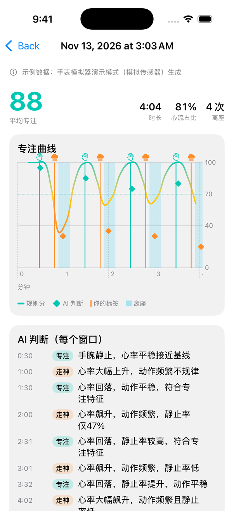
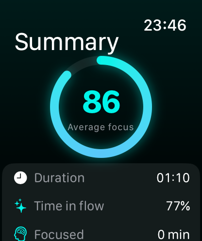
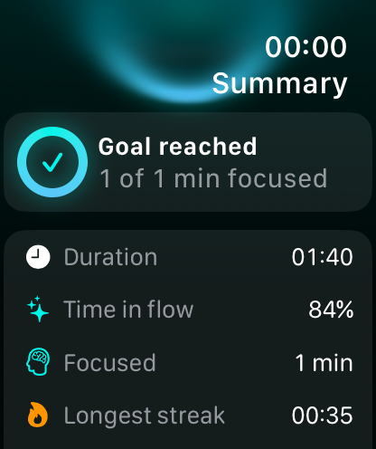
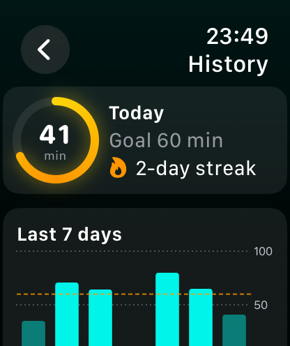
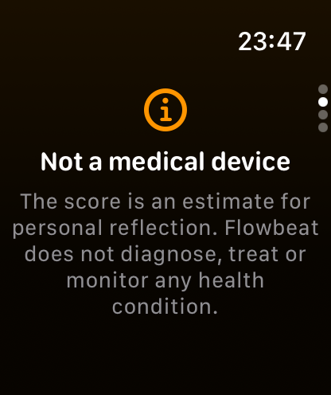

Apple Watch app · interactive web demo
Your focus, read from your wrist.
Flowbeat turns heart rate and wrist motion into a live 0–100 focus score on Apple Watch. The watch on this page runs Flowbeat’s actual scoring code, ported line by line from Swift to JavaScript. The sensor data is simulated.
Everything has run only in the watchOS simulator (demo mode with simulated sensors), in local tests, and in GitHub Actions. It has never run on a real Apple Watch, and the focus score has not been validated against real labeled data.
This page reads no sensors. The heart rate and motion come from the app’s own simulator demo cycle or from the sliders. Flowbeat is not a medical device, and it is not on the App Store yet.
Swipe or scroll on the screen (or press the crown) for the second page: labels and End.
Sensor input
The repo’s simulator mode, ported from FocusSession.simulateSensors(): after calibration a 60 s loop of fake data.
You are the sensors. The motion slider is the instantaneous wrist acceleration; the app averages it over the last 10 s, so the score responds with a lag.
What the algorithm sees this second
- Phase
- —
- Heart rate
- —
- Baseline
- —
- Motion, 10 s mean
- —
- Motion penalty
- —
- HR penalty
- —
- Raw score
- —
- Ring (smoothed)
- —
How the score works
Two penalties, one baseline, and smoothing.
The score is a transparent rule, not a trained model: there was no labeled data to train one. Every number below is a constant in FocusScorer.swift, and the same constants are in the JavaScript port.
-
1
Sense, once a second
During a session the watch runs a Mind & Body workout so heart rate keeps arriving (it is discarded at the end, not saved to Health). Wrist motion is the magnitude of CoreMotion’s user acceleration at 25 Hz, averaged over the last 10 s.
-
2
Calibrate a resting baseline
The first 60 s (10 s in the simulator build) collect heart rate. The baseline is the median, so one spike from standing up doesn’t move it. Seconds spent walking are left out.
-
3
Subtract two penalties
motion = clamp((m − 0.02) / 0.13) × 60heart = clamp((hr − baseline − 5) / 15) × 40raw = 100 − motion − heartBelow 0.02 g of motion and within 5 bpm of baseline there is no penalty. At 0.15 g or 20 bpm above baseline each penalty is at its maximum.
clampkeeps values in 0…1. -
4
Smooth it
shown = previous + 0.2 × (raw − previous)Exponential smoothing with α = 0.2, so one shake of the hand doesn’t drop the ring out of the focus band.
-
5
Walking isn’t distraction
When the system’s activity recognition reports walking or running, scoring pauses and the time counts as away. After you sit back down, the heart-rate penalty is skipped for 60 s while your pulse settles.
-
6
Bands and a gentle nudge
≥ 70 in flow · 40–70 a bit distracted · < 40 off track. After 3 minutes below 40, the watch taps once, at most every 10 minutes. A recovery has to last 15 s before the count resets.
What is ported, and from where
| JavaScript (js/flowbeat-core.js) | Swift source |
|---|---|
FocusScorer, RollingMean | FlowbeatCore/…/FocusScorer.swift |
AwayTracker, FocusEngine.tick, SessionStats | FlowbeatCore/…/FocusEngine.swift, SessionPlan.swift |
DistractionNudge | FlowbeatCore/…/DistractionNudge.swift |
simulateSensors, per-second session loop | Flowbeat/FocusSession.swift (tick(), simulateSensors()) |
| Watch screens (start, ring, controls, summary) | Flowbeat/ContentView.swift |
Not on this page: Pomodoro mode, history and complications, the on-device personal model (a logistic regression that needs at least 8 labels of each kind), HRV, and the LLM judge. Screenshots of those are below.
Checked against the Swift app
The port gives the same numbers as the app.
The repo includes a session that the watch simulator recorded in demo mode: 245 seconds of heart rate, motion and away flags, plus the score the Swift code computed each second. Your browser just fed those inputs through the JavaScript port:
Inputs come from FlowbeatPhone/Resources/sample-session.json. The source data is simulated, so this shows the port matches the Swift code, not that the score measures focus. The vertical lines are the demo’s automatic focused/distracted labels. Why the later dips are shallower: each walk starts a 60 s heart-rate grace period and the demo walks every 60 s, so after the first walk only the motion penalty applies.
Unit tests. test/port.test.js (Node, no dependencies) re-runs, case by case, the Swift tests for the ported code: FocusScorerTests, AwayTrackerTests, FocusEngineTests, DistractionNudgeTests and the streak cases from SessionPlanTests. It also replays the sample session above and checks the constants against the Swift source. 50 of 50 pass.
Developer builds only
An LLM as a second opinion.
In Debug builds, every 2 minutes (every 30 s in the simulator) the watch sends a statistics-only summary of the window to a small FastAPI backend: heart rate mean, min, max and trend against the baseline, wrist stillness and time away. Your own focused/distracted labels go along as few-shot examples. The model (Qwen qwen3.8-flash by default) returns {state, score, reason}. If it is down, the watch queues the windows and keeps scoring locally. The App Store build compiles all of this out and makes no network requests.


The judgments in that session
Real qwen3.8-flash responses to simulated-sensor windows. The model answered in Chinese; the English is translated for this page.
Measured in the repo: once the on-device score was removed from the prompt, the share of LLM scores that just copied it fell from 10/30 to 0/30. On ambiguous windows the models then disagreed, so the judge became independent but not provably more accurate.
More of the app
Other watch screens, from the simulator.
App Store screenshots from the Release build in the watchOS simulator, demo mode, with a fixed sample week. The numbers are not measurements.







Status
What is real here, and what isn’t.
Real
- The scoring code: a line-by-line port of the Swift logic, checked number for number against a session the Swift app recorded.
- The watch layout and states, re-created from the SwiftUI views.
- The LLM judgments shown above: real model outputs (on simulated windows).
- The app itself: 157 Swift tests and 48 backend tests passing in CI, and a Release build with no network code.
Simulated or unproven
- All sensor data on this page: either the simulator’s random demo cycle or your sliders.
- Whether the score tracks focus at all. It has never been validated against real labeled data.
- Real hardware. The app has never run on an Apple Watch; heart-rate sample rate, battery and background behavior are unmeasured.
- Release. v1 is prepared for the App Store but not signed or submitted.
“The simulator has no real sensors, so scores there are meaningless. Only a real watch can show whether the score means anything.” Flowbeat README